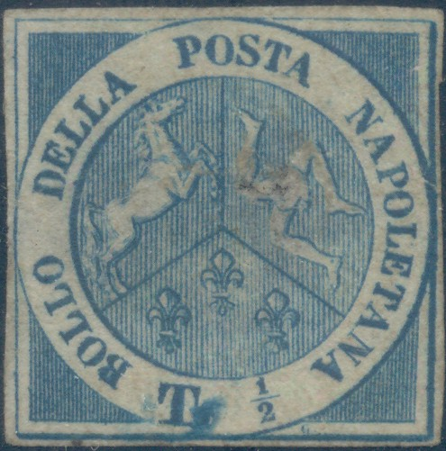
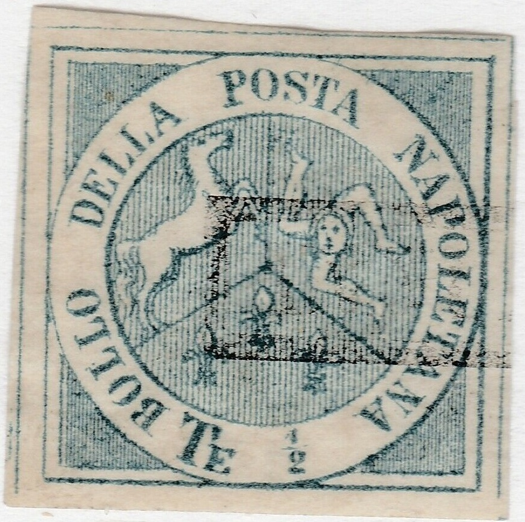
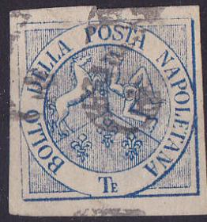
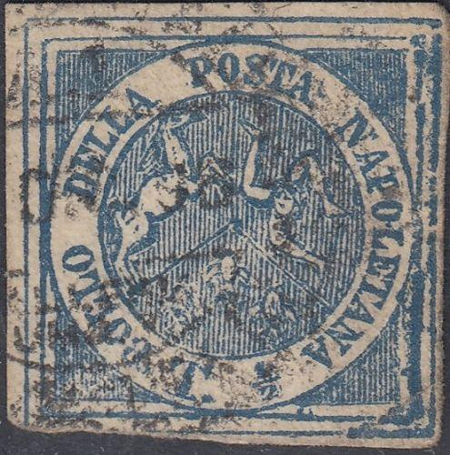
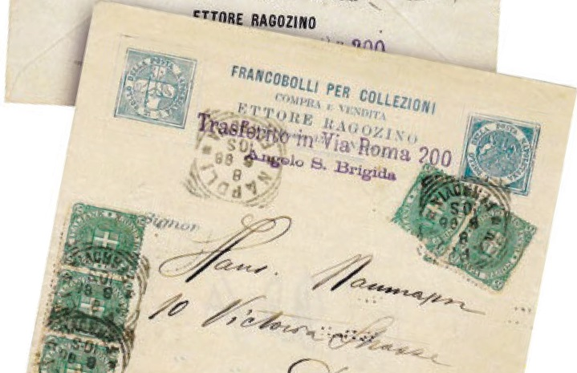
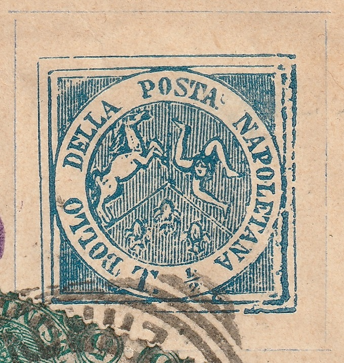
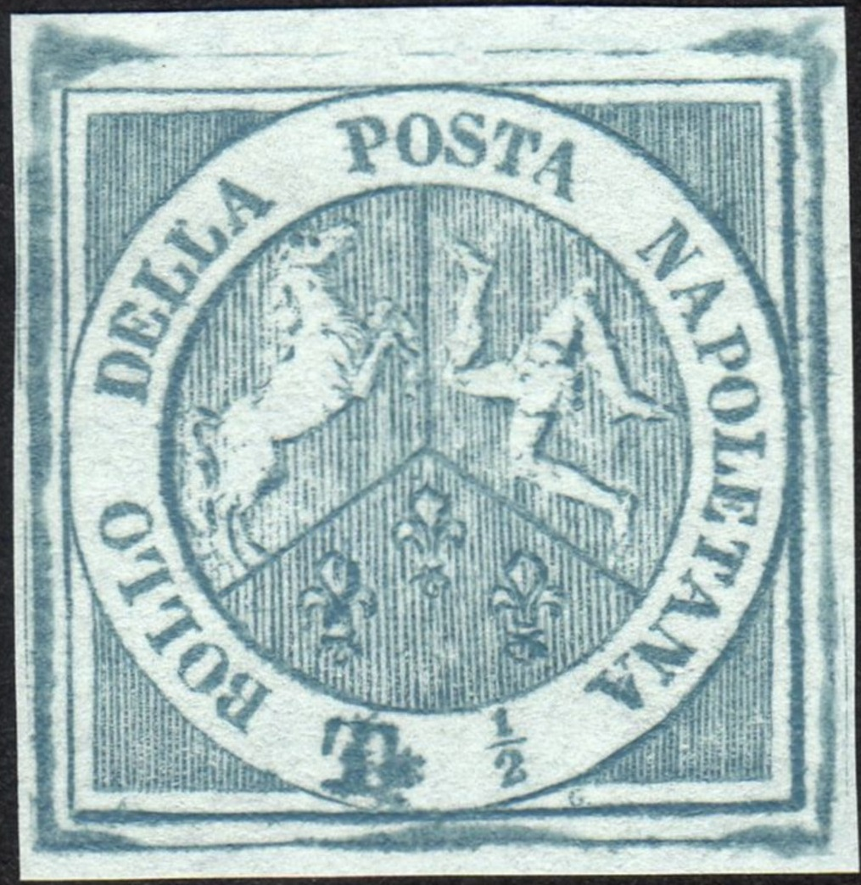
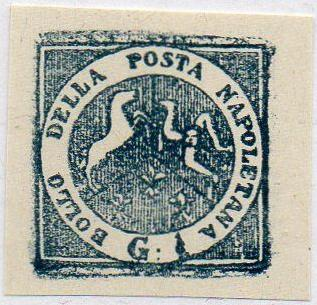

{kind=link}



Return To Catalogue - Naples 1860 issue, blue cross - Naples 1858 issue - Italy - Neapolitan Provinces
Note: on my website many of the
pictures can not be seen! They are of course present in the
catalogue;
contact me if you want to purchase the catalogue.

I've been told that this stamp is genuine, it has an
"E" behind the "T".
1/2 Tornese blue
Value of the stamps |
|||
vc = very common c = common * = not so common ** = uncommon |
*** = very uncommon R = rare RR = very rare RRR = extremely rare |
||
| Value | Unused | Used | Remarks |
| 1/2 t | RRR | RRR | |
This stamp is exactly the same as the1/2 G stamp of the 1858 issue, the 'G' is erased, but a small part can still be seen as a blotch behind the "T". Forgeries exist, examples:
 

There is an "E" behind the "T". Note the
circular "ZEITUNGSMARKEN" cancel on one of these
forgeries. It looks the last one is even engraved?
The above forgery is the first forgery described in 'Album Weeds'; there is an "E" behind the "T". In the genuine stamps there is never such a "E" (or only in a few stamps on the sheet? See genuine images above). The "O" of "POSTA" also leans over to the left.
 


This forgery also has an "E" behind the "T",
the value inscription is missing. I've seen this forgery with a
"4978", "2143" or "5020" numeral
cancel in a dotted pattern and many other bogus cancels.
A Senf forgery, with overprint "FACSIMILE." in red (produced in 1884):

I have seen this forgery with the word "FACSIMILE" being erased, or with a large black smudge pretending to be a cancel, covering the word "FACSIMILE.":


"FACSIMILE" erased and a bogus cancel covering this
word.


In the above forgeries there is no sign of a blotch behind the "T", one of them has a comma behind the "T".


Forgeries with dot behind the "T".




This forgery is engraved! The "1" of "1/2" is
too large. It looks like this forgery type is engraved.

(modern forgeries made by Peter Winter)
Peter Winter forgery pasted on a (real?) letter. The cancel
"ARMEES D'ITALIE" must also have been forged,s ince it
is also applied on top of the forgery.

A deceptive item. I think it is a forgery; the lettering is
slightly too large and the tail of the horse is located too far
from the inner circle.
Block of three forgeries (reduced size)

Crude modern forgery with "G" instead of "T";
pretending to be some kind of misprint?
The above forgery seems to be a relatively modern product. It is often offered from Italy on Ebay (2005). Note the relatively crude execution, the breaks and flaws seem to be constant for each individual forgery. Click here for more information on these modern Italian States forgeries

Another forgery with "G" instead of "T" and
the head of the horse too far away from the circle.


Some very dubious stamps.


Other forgeries

For Naples 1860 issue, blue cross, click
here
{kind=link}
{kind=link}
{kind=link}
{kind=link}
{kind=link}
{kind=link}